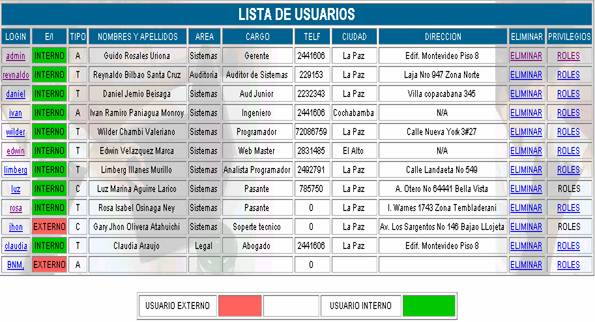
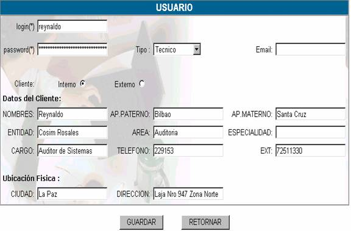
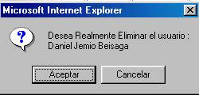
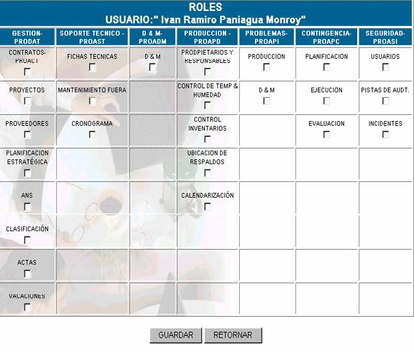

USUARIOS
Muestra como pantalla principal la Lista de Usuarios, usted como administrador puede dar de baja de la mesa de ayuda a algún usuario, también puede asignarle roles, para restringirle el acceso a ciertas pantallas. La siguiente figura muestra la lista de usuarios.

Login; usted como administrador, como ya lo dijimos anteriormente, tiene la opción de poder saber con que login entraron al sistema todos los usuarios incluyéndose usted mismo.
La mesa de ayuda le brinda la opción de cambiar los datos de los diferentes usuarios, esto se puede ocasionar cuando un usuario cambia de domicilio, teléfono, cargo, etc,. Estos cambios se los pueden realizar haciendo click sobre el
login del usuario, entonces aparecerá la pantalla siguiente.

Si usted cambia los datos deben tomarse en cuenta las recomendaciones hechas anteriormente (Véase: Añadir usuario).
E/I; este campo hace a la referencia al tipo de cliente, con el cual se hizo el registro de usuario.
Tipo; el tipo hace referencia al tipo de usuario con el cual se dio de alta al usuario, este puede ser
Aà Administrador
Tà Técnico
Cà Cliente
Nombres y apellidos; describe los nombres y apellidos con los cuales se registraron los usuarios.
Los campos Area, Cargo, Teléfono, Ciudad, Dirección, hacen referencia a los datos personales del usuario con los cuales fueron registrados.
Eliminar; este campo le permite dar de baja a los usuarios que deben dejar de tener acceso a la mesa de ayuda, para realizar este proceso haga click en Eliminar, entonces le aparecerá el siguiente mensaje:

Si usted está seguro de eliminar al usuario presione aceptar, entonces le aparecerá en mensaje de eliminación con éxito.
Privilegios; los roles asignados por usted, deben estar de acuerdo a las normas dentro de la empresa, de asignación de roles a ciertos usuarios, para asignar, modificar o quitarle roles a un usuario haga click en
Roles como podrá observar esta opción solo está disponible para los usuarios que son Técnicos o Administradores y no para los usuarios clientes, la pantalla se muestra a continuación:
Como se detalla en el anexo A las diferentes opciones del menú, describen los procesos de administración que brinda la mesa de ayuda.
Usted. como administrador puede determinar a que pantallas tiene acceso un usuario haciendo click en la caja de selección correspondiente.